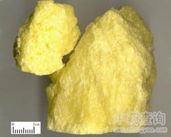

硫黄

拼音
Liú Huánɡ
别名
硫磺、黄牙、天生黄
来源
本品为自然元素类矿物硫族自然硫，采挖后，加热熔化，除去杂质；或用含硫矿物经加工制得。
生境分布
产山西、陕西、河南、山东、湖北、湖南、江苏、四川、广东、台湾等地。。
药材特点
斜方晶系。晶体的锥面发达，偶而呈厚板状。常见者为致密块状、钟乳状、被膜状、土状等。颜色有黄、浅黄、淡绿黄、灰黄、褐色和黑色等。条痕白色至浅黄色。晶面具金刚光泽，断口呈脂肪光泽。半透明。解理不完全。断口呈贝壳状或参差状。硬度1～2。比重2.05～2.08。性脆。为良好的绝缘体。以手握紧置于耳旁，可闻轻微的爆裂声。在108℃时即熔化，270℃时燃烧。常见于温泉、喷泉、火山口区域；沉积岩中亦常有之。
性状
本品呈不规则块状。黄色或略呈绿黄色。表面不平坦，呈脂肪光泽，常有多数小孔。用手握紧置于耳旁，可闻轻微的爆裂声。体轻，质松，易碎，断面常呈针状结晶形。有特异的臭气，味淡。
性味
酸，温；有毒。
功能主治
外用解毒杀虫疗疮；内服补火助阳通便。外治用于疥癣，秃疮，阴疽恶疮；内服用于阳痿足冷，虚喘冷哮，虚寒便秘。
用法用量
外用适量，研末油调涂敷患处。内服1.5～3g,炮制后入丸散服。
化学成分
纯品主要含硫，并含碲与硒。商品中有杂质。
药理作用
1：硫黄本身不活泼：内服后变为硫化物或硫化氢，刺激胃肠粘膜，使之兴奋蠕动，导致下泻
2：此过程需要有碱性环境、大肠杆菌、特别是脂肪分解酶的存在
3：肠内容中：脂肪性物质较多时，易产生大量硫化氢而致泻
4：空气中硫化氢浓度过高：可直接麻痹中枢神经细胞而导致死亡
5：硫化物局部应用：有溶解角质及脱毛（硫化钡）作用
摘录
《中国药典》